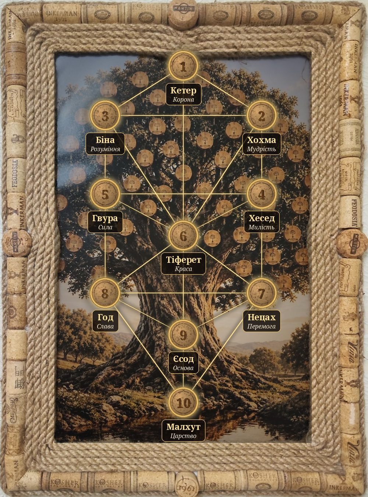

Арт-сповідь у коркових рамах
drEVO Life ·
Древо Життя
Life · Family · Team
Ці корки колись тримали вино — чиїсь свята, розмови й тости. Тепер вони тримають картини.
Кожна робота тут — арт-сповідь, і в кожної є своя пісня.
Десять корків на дереві — десять сефірот, десять кроків від коріння до світла.
А ми — маленька людина перед великим простором. І нам тут добре.

10 корків = 10 сефірот22 золоті стежки5 робіт — 5 пісень
Десять сефірот
від Корони вгорі до Царства біля коріння
- 1КетерКорона
- 2ХохмаМудрість
- 3БінаРозуміння
- 4ХеседМилість
- 5ГвураСила
- 6ТіферетКраса
- 7НецахПеремога
- 8ГодСлава
- 9ЄсодОснова
- 10МалхутЦарство
Арт-сповідь
кожна робота має свою пісню · усі роботи →

Галерея
Роботи в рамах із винних корків і джуту — кожна зроблена вручну.
Музика
До кожної картини — своя пісня. Дивишся і слухаєш разом.
❦
Про нас
drEVO Life — це родина й команда: Life · Family · Team.